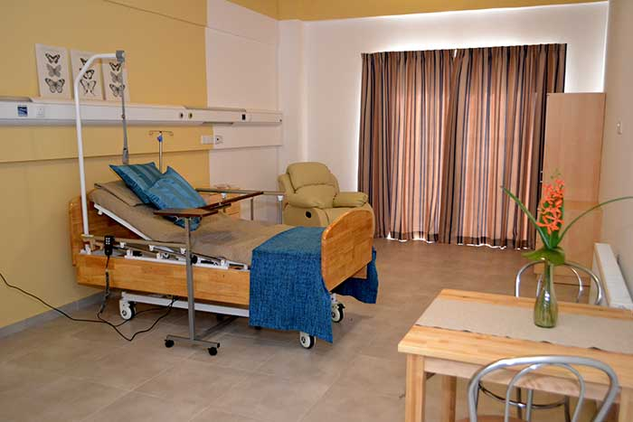

Archangel Hospital is a place where the sick, injured and emergency case are taken for treatment. The doctors and nurses are readily available there for admitting and attending on their patients and nurses are very care fully. They are employed by the hospitals to nurse the sick back to heath.
In the nineteenth and the twenty century’s medical science made remarkable progress and the cures for almost all the diseases were found. Both in the spheres of medicine and surgery the prolonged researches were rewarded with epoch-making achievements.
The dedicated teams of doctors and nurses delivers the message of hope to their patients in the hospitals. All over the world, hospitals are built to treat and cure thousands of the sick patients. As these hospitals, there are very well-equipped facilities and expert doctors. These hospitals are considered the best places for effective treatment.
The doctors and nurses works effortlessly in doing their duties to the patients. The atmosphere in the hospitals should be pleasant so the the patient can feel comfortable.The doctor and nurses every effort for save life of patient.
However, some hospital doesn’t provide the expected service to it’s patients. They neglect their duties toward the patients. This should not happen. The doctors should always treats their patients with utmost care, considering their lives very precious.
